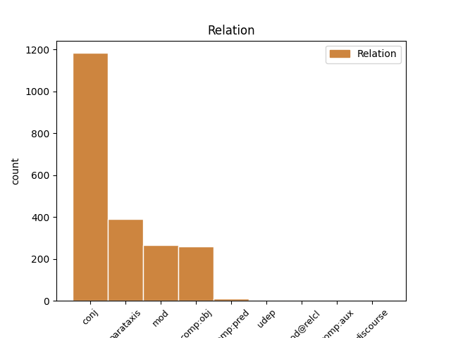
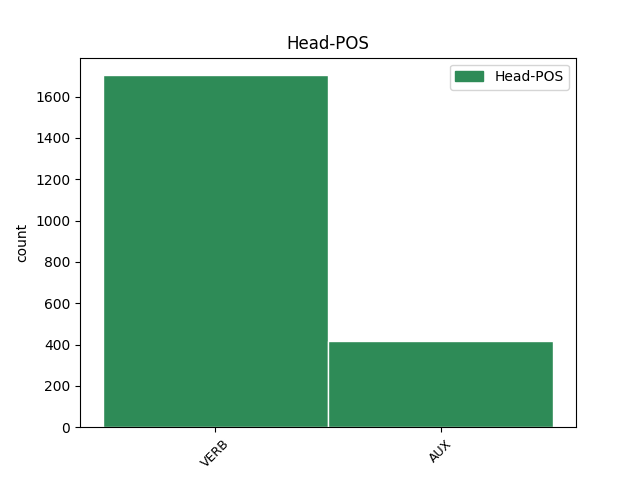
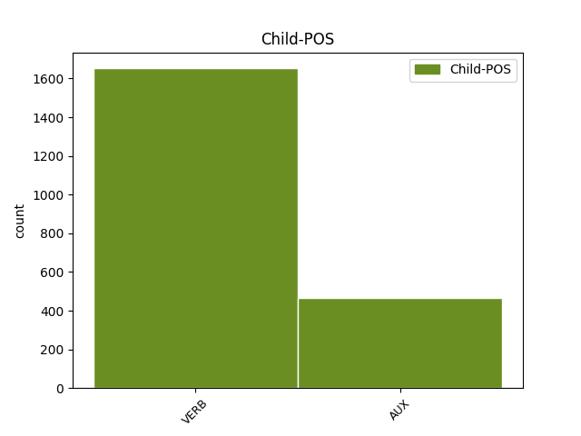

Distribution of features within this leaf



Agreement Rules sorted by frequency.
- When the dependent token is the conjunct(conj) of the head token,
1 Avisado _ _ _ _ 0 _ _ _
2 de _ _ _ _ 0 _ _ _
3 o _ _ _ _ 0 _ _ _
4 alerta _ _ _ _ 0 _ _ _
5 de _ _ _ _ 0 _ _ _
6 o _ _ _ _ 0 _ _ _
7 governador _ _ _ _ 0 _ _ _
8 , _ _ _ _ 0 _ _ _
9 Itamar _ _ _ _ 0 _ _ _
10 desdenhou desdenhar VERB _ Mood=Ind|Number=Sing|Person=3|Tense=Past|VerbForm=Fin 0 _ _ _
11 os _ _ _ _ 0 _ _ _
12 riscos _ _ _ _ 0 _ _ _
13 e _ _ _ _ 0 _ _ _
14 manteve manter VERB _ Mood=Ind|Number=Sing|Person=3|Tense=Past|VerbForm=Fin 10 conj _ _
15 a _ _ _ _ 0 _ _ _
16 viagem _ _ _ _ 0 _ _ _
17 . _ _ _ _ 0 _ _ _
1 « _ _ _ _ 0 _ _ _
2 A _ _ _ _ 0 _ _ _
3 reação _ _ _ _ 0 _ _ _
4 de _ _ _ _ 0 _ _ _
5 o _ _ _ _ 0 _ _ _
6 público _ _ _ _ 0 _ _ _
7 é ser AUX _ Mood=Ind|Number=Sing|Person=3|Tense=Pres|VerbForm=Fin 11 parataxis _ _
8 imprevisível _ _ _ _ 0 _ _ _
9 » _ _ _ _ 0 _ _ _
10 , _ _ _ _ 0 _ _ _
11 disse dizer VERB _ Mood=Ind|Number=Sing|Person=3|Tense=Past|VerbForm=Fin 0 _ _ _
12 . _ _ _ _ 0 _ _ _
1 Estou estar AUX _ Mood=Ind|Number=Sing|Person=1|Tense=Pres|VerbForm=Fin 7 mod _ _
2 aqui _ _ _ _ 0 _ _ _
3 a _ _ _ _ 0 _ _ _
4 trabalho _ _ _ _ 0 _ _ _
5 » _ _ _ _ 0 _ _ _
6 , _ _ _ _ 0 _ _ _
7 disse dizer VERB _ Mood=Ind|Number=Sing|Person=3|Tense=Past|VerbForm=Fin 0 _ _ _
8 . _ _ _ _ 0 _ _ _
1 Levantamento _ _ _ _ 0 _ _ _
2 realizado _ _ _ _ 0 _ _ _
3 entre _ _ _ _ 0 _ _ _
4 pacientes _ _ _ _ 0 _ _ _
5 que _ _ _ _ 0 _ _ _
6 ingeriram _ _ _ _ 0 _ _ _
7 cápsulas _ _ _ _ 0 _ _ _
8 com _ _ _ _ 0 _ _ _
9 a _ _ _ _ 0 _ _ _
10 substância _ _ _ _ 0 _ _ _
11 entre _ _ _ _ 0 _ _ _
12 1969 _ _ _ _ 0 _ _ _
13 e _ _ _ _ 0 _ _ _
14 1992 _ _ _ _ 0 _ _ _
15 indicou indicar VERB _ Mood=Ind|Number=Sing|Person=3|Tense=Past|VerbForm=Fin 0 _ _ _
16 que _ _ _ _ 0 _ _ _
17 16 _ _ _ _ 0 _ _ _
18 pessoas _ _ _ _ 0 _ _ _
19 podem poder VERB _ Mood=Ind|Number=Plur|Person=3|Tense=Pres|VerbForm=Fin 15 comp:obj _ _
20 ter _ _ _ _ 0 _ _ _
21 morrido _ _ _ _ 0 _ _ _
22 em _ _ _ _ 0 _ _ _
23 consequência _ _ _ _ 0 _ _ _
24 de _ _ _ _ 0 _ _ _
25 contra-indicações _ _ _ _ 0 _ _ _
26 causadas _ _ _ _ 0 _ _ _
27 por _ _ _ _ 0 _ _ _
28 o _ _ _ _ 0 _ _ _
29 sulfato _ _ _ _ 0 _ _ _
30 de _ _ _ _ 0 _ _ _
31 quinino _ _ _ _ 0 _ _ _
32 . _ _ _ _ 0 _ _ _
1 Em _ _ _ _ 0 _ _ _
2 um _ _ _ _ 0 _ _ _
3 campeonato _ _ _ _ 0 _ _ _
4 em _ _ _ _ 0 _ _ _
5 que _ _ _ _ 0 _ _ _
6 predominaram _ _ _ _ 0 _ _ _
7 as _ _ _ _ 0 _ _ _
8 defesas _ _ _ _ 0 _ _ _
9 fechadas _ _ _ _ 0 _ _ _
10 , _ _ _ _ 0 _ _ _
11 o _ _ _ _ 0 _ _ _
12 que _ _ _ _ 0 _ _ _
13 fez fazer VERB _ Mood=Ind|Number=Sing|Person=3|Tense=Past|VerbForm=Fin 16 comp:pred _ _
14 a _ _ _ _ 0 _ _ _
15 diferença _ _ _ _ 0 _ _ _
16 foi ser AUX _ Mood=Ind|Number=Sing|Person=3|Tense=Past|VerbForm=Fin 0 _ _ _
17 a _ _ _ _ 0 _ _ _
18 imaginação _ _ _ _ 0 _ _ _
19 ouso _ _ _ _ 0 _ _ _
20 dizer _ _ _ _ 0 _ _ _
21 , _ _ _ _ 0 _ _ _
22 para _ _ _ _ 0 _ _ _
23 horror _ _ _ _ 0 _ _ _
24 de _ _ _ _ 0 _ _ _
25 Parreira _ _ _ _ 0 _ _ _
26 , _ _ _ _ 0 _ _ _
27 a _ _ _ _ 0 _ _ _
28 « _ _ _ _ 0 _ _ _
29 magia _ _ _ _ 0 _ _ _
30 » _ _ _ _ 0 _ _ _
31 de _ _ _ _ 0 _ _ _
32 um _ _ _ _ 0 _ _ _
33 punhado _ _ _ _ 0 _ _ _
34 de _ _ _ _ 0 _ _ _
35 craques _ _ _ _ 0 _ _ _
36 : _ _ _ _ 0 _ _ _
37 Romário _ _ _ _ 0 _ _ _
38 , _ _ _ _ 0 _ _ _
39 Baggio _ _ _ _ 0 _ _ _
40 , _ _ _ _ 0 _ _ _
41 Stoichkov _ _ _ _ 0 _ _ _
42 , _ _ _ _ 0 _ _ _
43 Hagi _ _ _ _ 0 _ _ _
44 , _ _ _ _ 0 _ _ _
45 Brolin _ _ _ _ 0 _ _ _
46 ... _ _ _ _ 0 _ _ _
1 Contrariamente _ _ _ _ 0 _ _ _
2 a _ _ _ _ 0 _ _ _
3 o _ _ _ _ 0 _ _ _
4 que _ _ _ _ 0 _ _ _
5 esperavam esperar VERB _ Mood=Ind|Number=Plur|Person=3|Tense=Imp|VerbForm=Fin 18 mod@relcl _ _
6 Luís _ _ _ _ 0 _ _ _
7 Rodrigues _ _ _ _ 0 _ _ _
8 e _ _ _ _ 0 _ _ _
9 os _ _ _ _ 0 _ _ _
10 seus _ _ _ _ 0 _ _ _
11 correligionários _ _ _ _ 0 _ _ _
12 , _ _ _ _ 0 _ _ _
13 o _ _ _ _ 0 _ _ _
14 caso _ _ _ _ 0 _ _ _
15 , _ _ _ _ 0 _ _ _
16 porém _ _ _ _ 0 _ _ _
17 , _ _ _ _ 0 _ _ _
18 ficou ficar VERB _ Mood=Ind|Number=Sing|Person=3|Tense=Past|VerbForm=Fin 0 _ _ _
19 adormecido _ _ _ _ 0 _ _ _
20 em _ _ _ _ 0 _ _ _
21 o _ _ _ _ 0 _ _ _
22 ministério _ _ _ _ 0 _ _ _
23 de _ _ _ _ 0 _ _ _
24 as _ _ _ _ 0 _ _ _
25 Finanças _ _ _ _ 0 _ _ _
26 . _ _ _ _ 0 _ _ _
1 O _ _ _ _ 0 _ _ _
2 essencial _ _ _ _ 0 _ _ _
3 , _ _ _ _ 0 _ _ _
4 em _ _ _ _ 0 _ _ _
5 a _ _ _ _ 0 _ _ _
6 compreensão _ _ _ _ 0 _ _ _
7 de _ _ _ _ 0 _ _ _
8 os _ _ _ _ 0 _ _ _
9 « _ _ _ _ 0 _ _ _
10 jogos _ _ _ _ 0 _ _ _
11 de _ _ _ _ 0 _ _ _
12 poder _ _ _ _ 0 _ _ _
13 » _ _ _ _ 0 _ _ _
14 , _ _ _ _ 0 _ _ _
15 é _ _ _ _ 0 _ _ _
16 conseguir _ _ _ _ 0 _ _ _
17 saber _ _ _ _ 0 _ _ _
18 quem _ _ _ _ 0 _ _ _
19 está estar AUX _ Mood=Ind|Number=Sing|Person=3|Tense=Pres|VerbForm=Fin 0 _ _ _
20 envolvido _ _ _ _ 0 _ _ _
21 e _ _ _ _ 0 _ _ _
22 onde _ _ _ _ 0 _ _ _
23 está estar AUX _ Mood=Ind|Number=Sing|Person=3|Tense=Pres|VerbForm=Fin 19 udep _ _
24 a _ _ _ _ 0 _ _ _
25 força _ _ _ _ 0 _ _ _
26 em _ _ _ _ 0 _ _ _
27 cada _ _ _ _ 0 _ _ _
28 situação _ _ _ _ 0 _ _ _
29 concreta _ _ _ _ 0 _ _ _
30 . _ _ _ _ 0 _ _ _
1 Clinton _ _ _ _ 0 _ _ _
2 apressou _ _ _ _ 0 _ _ _
3 se _ _ _ _ 0 _ _ _
4 a _ _ _ _ 0 _ _ _
5 dizer _ _ _ _ 0 _ _ _
6 que _ _ _ _ 0 _ _ _
7 tais _ _ _ _ 0 _ _ _
8 contactos _ _ _ _ 0 _ _ _
9 não _ _ _ _ 0 _ _ _
10 deviam _ _ _ _ 0 _ _ _
11 ter _ _ _ _ 0 _ _ _
12 acontecido _ _ _ _ 0 _ _ _
13 e _ _ _ _ 0 _ _ _
14 a _ _ _ _ 0 _ _ _
15 sua _ _ _ _ 0 _ _ _
16 porta-voz _ _ _ _ 0 _ _ _
17 , _ _ _ _ 0 _ _ _
18 Dee _ _ _ _ 0 _ _ _
19 Dee _ _ _ _ 0 _ _ _
20 Myers _ _ _ _ 0 _ _ _
21 , _ _ _ _ 0 _ _ _
22 indicou indicar VERB _ Mood=Ind|Number=Sing|Person=3|Tense=Past|VerbForm=Fin 28 comp:aux _ _
23 que _ _ _ _ 0 _ _ _
24 documentos _ _ _ _ 0 _ _ _
25 sobre _ _ _ _ 0 _ _ _
26 esses _ _ _ _ 0 _ _ _
27 encontros _ _ _ _ 0 _ _ _
28 foram ser AUX _ Mood=Ind|Number=Plur|Person=3|Tense=Past|VerbForm=Fin 0 _ _ _
29 compilados _ _ _ _ 0 _ _ _
30 e _ _ _ _ 0 _ _ _
31 seriam _ _ _ _ 0 _ _ _
32 entregues _ _ _ _ 0 _ _ _
33 a _ _ _ _ 0 _ _ _
34 Fiske _ _ _ _ 0 _ _ _
35 , _ _ _ _ 0 _ _ _
36 respeitando _ _ _ _ 0 _ _ _
37 a _ _ _ _ 0 _ _ _
38 intimação _ _ _ _ 0 _ _ _
39 feita _ _ _ _ 0 _ _ _
40 por _ _ _ _ 0 _ _ _
41 este _ _ _ _ 0 _ _ _
42 . _ _ _ _ 0 _ _ _
Disagree Examples:
1 « _ _ _ _ 0 _ _ _
2 Encomendem _ _ _ _ 0 _ _ _
3 nos _ _ _ _ 0 _ _ _
4 a _ _ _ _ 0 _ _ _
5 projectistas _ _ _ _ 0 _ _ _
6 de _ _ _ _ 0 _ _ _
7 fora _ _ _ _ 0 _ _ _
8 » _ _ _ _ 0 _ _ _
9 porque _ _ _ _ 0 _ _ _
10 , _ _ _ _ 0 _ _ _
11 se _ _ _ _ 0 _ _ _
12 as _ _ _ _ 0 _ _ _
13 obras _ _ _ _ 0 _ _ _
14 vierem vir VERB _ Mood=Sub|Number=Plur|Person=3|Tense=Fut|VerbForm=Fin 21 mod _ MWE=vierem_a|MWEPOS=AUX
15 a _ _ _ _ 0 _ _ _
16 ser _ _ _ _ 0 _ _ _
17 financiadas _ _ _ _ 0 _ _ _
18 , _ _ _ _ 0 _ _ _
19 eles _ _ _ _ 0 _ _ _
20 até _ _ _ _ 0 _ _ _
21 saem sair VERB _ Mood=Ind|Number=Plur|Person=3|Tense=Pres|VerbForm=Fin 0 _ _ _
22 de _ _ _ _ 0 _ _ _
23 graça _ _ _ _ 0 _ _ _
24 , _ _ _ _ 0 _ _ _
25 já _ _ _ _ 0 _ _ _
26 que _ _ _ _ 0 _ _ _
27 , _ _ _ _ 0 _ _ _
28 em _ _ _ _ 0 _ _ _
29 esse _ _ _ _ 0 _ _ _
30 caso _ _ _ _ 0 _ _ _
31 , _ _ _ _ 0 _ _ _
32 « _ _ _ _ 0 _ _ _
33 os _ _ _ _ 0 _ _ _
34 fundos _ _ _ _ 0 _ _ _
35 comunitários _ _ _ _ 0 _ _ _
36 pagam _ _ _ _ 0 _ _ _
37 os _ _ _ _ 0 _ _ _
38 projectos _ _ _ _ 0 _ _ _
39 , _ _ _ _ 0 _ _ _
40 o _ _ _ _ 0 _ _ _
41 mesmo _ _ _ _ 0 _ _ _
42 não _ _ _ _ 0 _ _ _
43 acontecendo _ _ _ _ 0 _ _ _
44 quando _ _ _ _ 0 _ _ _
45 eles _ _ _ _ 0 _ _ _
46 são _ _ _ _ 0 _ _ _
47 feitos _ _ _ _ 0 _ _ _
48 por _ _ _ _ 0 _ _ _
49 os _ _ _ _ 0 _ _ _
50 GAT _ _ _ _ 0 _ _ _
51 » _ _ _ _ 0 _ _ _
52 , _ _ _ _ 0 _ _ _
53 dado _ _ _ _ 0 _ _ _
54 serem _ _ _ _ 0 _ _ _
55 organismos _ _ _ _ 0 _ _ _
56 de _ _ _ _ 0 _ _ _
57 o _ _ _ _ 0 _ _ _
58 Estado _ _ _ _ 0 _ _ _
59 . _ _ _ _ 0 _ _ _
1 Seguro _ _ _ _ 0 _ _ _
2 , _ _ _ _ 0 _ _ _
3 eficiente _ _ _ _ 0 _ _ _
4 , _ _ _ _ 0 _ _ _
5 decidido _ _ _ _ 0 _ _ _
6 -- _ _ _ _ 0 _ _ _
7 tivesse ter VERB _ Mood=Sub|Number=Sing|Person=3|Tense=Imp|VerbForm=Fin 0 _ _ _
8 o _ _ _ _ 0 _ _ _
9 Penafiel _ _ _ _ 0 _ _ _
10 outro _ _ _ _ 0 _ _ _
11 Vasco _ _ _ _ 0 _ _ _
12 e _ _ _ _ 0 _ _ _
13 provavelmente _ _ _ _ 0 _ _ _
14 o _ _ _ _ 0 _ _ _
15 resultado _ _ _ _ 0 _ _ _
16 teria ter AUX _ Mood=Cnd|Number=Sing|Person=3|VerbForm=Fin 7 conj _ _
17 sido _ _ _ _ 0 _ _ _
18 outro _ _ _ _ 0 _ _ _
19 . _ _ _ _ 0 _ _ _
1 ( _ _ _ _ 0 _ _ _
2 Há haver VERB _ Mood=Ind|Number=Sing|Person=3|Tense=Pres|VerbForm=Fin 0 _ _ _
3 quem _ _ _ _ 0 _ _ _
4 defenda defender VERB _ Mood=Sub|Number=Sing|Person=3|Tense=Pres|VerbForm=Fin 2 comp:obj _ SpaceAfter=No
5 , _ _ _ _ 0 _ _ _
6 em _ _ _ _ 0 _ _ _
7 o _ _ _ _ 0 _ _ _
8 entanto _ _ _ _ 0 _ _ _
9 , _ _ _ _ 0 _ _ _
10 que _ _ _ _ 0 _ _ _
11 se _ _ _ _ 0 _ _ _
12 trata _ _ _ _ 0 _ _ _
13 de _ _ _ _ 0 _ _ _
14 um _ _ _ _ 0 _ _ _
15 fax _ _ _ _ 0 _ _ _
16 apócrifo _ _ _ _ 0 _ _ _
17 , _ _ _ _ 0 _ _ _
18 realmente _ _ _ _ 0 _ _ _
19 escrito _ _ _ _ 0 _ _ _
20 por _ _ _ _ 0 _ _ _
21 o _ _ _ _ 0 _ _ _
22 deputado _ _ _ _ 0 _ _ _
23 José _ _ _ _ 0 _ _ _
24 Magalhães _ _ _ _ 0 _ _ _
25 , _ _ _ _ 0 _ _ _
26 o _ _ _ _ 0 _ _ _
27 qual _ _ _ _ 0 _ _ _
28 teria _ _ _ _ 0 _ _ _
29 , _ _ _ _ 0 _ _ _
30 aliás _ _ _ _ 0 _ _ _
31 , _ _ _ _ 0 _ _ _
32 imitado _ _ _ _ 0 _ _ _
33 a _ _ _ _ 0 _ _ _
34 letra _ _ _ _ 0 _ _ _
35 de _ _ _ _ 0 _ _ _
36 o _ _ _ _ 0 _ _ _
37 ex-deputado _ _ _ _ 0 _ _ _
38 António _ _ _ _ 0 _ _ _
39 Barreto _ _ _ _ 0 _ _ _
40 . _ _ _ _ 0 _ _ _
1 Este _ _ _ _ 0 _ _ _
2 ano _ _ _ _ 0 _ _ _
3 , _ _ _ _ 0 _ _ _
4 eventualmente _ _ _ _ 0 _ _ _
5 condicionado _ _ _ _ 0 _ _ _
6 por _ _ _ _ 0 _ _ _
7 a _ _ _ _ 0 _ _ _
8 polémica _ _ _ _ 0 _ _ _
9 que _ _ _ _ 0 _ _ _
10 o _ _ _ _ 0 _ _ _
11 opõe _ _ _ _ 0 _ _ _
12 a _ _ _ _ 0 _ _ _
13 o _ _ _ _ 0 _ _ _
14 Presidente _ _ _ _ 0 _ _ _
15 de _ _ _ _ 0 _ _ _
16 a _ _ _ _ 0 _ _ _
17 República _ _ _ _ 0 _ _ _
18 em _ _ _ _ 0 _ _ _
19 torno _ _ _ _ 0 _ _ _
20 de _ _ _ _ 0 _ _ _
21 os _ _ _ _ 0 _ _ _
22 feriados _ _ _ _ 0 _ _ _
23 ( _ _ _ _ 0 _ _ _
24 recorde recordar VERB _ Mood=Sub|Number=Sing|Person=3|Tense=Pres|VerbForm=Fin 0 _ _ _
25 se _ _ _ _ 0 _ _ _
26 que _ _ _ _ 0 _ _ _
27 Soares _ _ _ _ 0 _ _ _
28 enviou _ _ _ _ 0 _ _ _
29 a _ _ _ _ 0 _ _ _
30 lei _ _ _ _ 0 _ _ _
31 para _ _ _ _ 0 _ _ _
32 o _ _ _ _ 0 _ _ _
33 Tribunal _ _ _ _ 0 _ _ _
34 Constitucional _ _ _ _ 0 _ _ _
35 ) _ _ _ _ 0 _ _ _
36 Cavaco _ _ _ _ 0 _ _ _
37 decidiu decidir VERB _ Mood=Ind|Number=Sing|Person=3|Tense=Past|VerbForm=Fin 24 parataxis _ SpaceAfter=No
38 , _ _ _ _ 0 _ _ _
39 pura _ _ _ _ 0 _ _ _
40 e _ _ _ _ 0 _ _ _
41 simplesmente _ _ _ _ 0 _ _ _
42 , _ _ _ _ 0 _ _ _
43 « _ _ _ _ 0 _ _ _
44 acabar _ _ _ _ 0 _ _ _
45 » _ _ _ _ 0 _ _ _
46 com _ _ _ _ 0 _ _ _
47 a _ _ _ _ 0 _ _ _
48 terça-feira _ _ _ _ 0 _ _ _
49 de _ _ _ _ 0 _ _ _
50 Carnaval _ _ _ _ 0 _ _ _
51 . _ _ _ _ 0 _ _ _
1 Em _ _ _ _ 0 _ _ _
2 aquele _ _ _ _ 0 _ _ _
3 ano _ _ _ _ 0 _ _ _
4 , _ _ _ _ 0 _ _ _
5 as _ _ _ _ 0 _ _ _
6 Brigadas _ _ _ _ 0 _ _ _
7 Vermelhas _ _ _ _ 0 _ _ _
8 ( _ _ _ _ 0 _ _ _
9 BR _ _ _ _ 0 _ _ _
10 ) _ _ _ _ 0 _ _ _
11 estavam _ _ _ _ 0 _ _ _
12 em _ _ _ _ 0 _ _ _
13 o _ _ _ _ 0 _ _ _
14 auge _ _ _ _ 0 _ _ _
15 de _ _ _ _ 0 _ _ _
16 a _ _ _ _ 0 _ _ _
17 actividade _ _ _ _ 0 _ _ _
18 terrorista _ _ _ _ 0 _ _ _
19 , _ _ _ _ 0 _ _ _
20 o _ _ _ _ 0 _ _ _
21 líder _ _ _ _ 0 _ _ _
22 cristão-democrata _ _ _ _ 0 _ _ _
23 Aldo _ _ _ _ 0 _ _ _
24 Moro _ _ _ _ 0 _ _ _
25 acabara acabar VERB _ Mood=Ind|Number=Sing|Person=3|Tense=Pqp|VerbForm=Fin 0 _ _ _
26 de _ _ _ _ 0 _ _ _
27 ser _ _ _ _ 0 _ _ _
28 raptado _ _ _ _ 0 _ _ _
29 , _ _ _ _ 0 _ _ _
30 e _ _ _ _ 0 _ _ _
31 o _ _ _ _ 0 _ _ _
32 príncipe _ _ _ _ 0 _ _ _
33 -- _ _ _ _ 0 _ _ _
34 proibido _ _ _ _ 0 _ _ _
35 de _ _ _ _ 0 _ _ _
36 entrar _ _ _ _ 0 _ _ _
37 em _ _ _ _ 0 _ _ _
38 Itália _ _ _ _ 0 _ _ _
39 desde _ _ _ _ 0 _ _ _
40 o _ _ _ _ 0 _ _ _
41 exílio _ _ _ _ 0 _ _ _
42 de _ _ _ _ 0 _ _ _
43 o _ _ _ _ 0 _ _ _
44 pai _ _ _ _ 0 _ _ _
45 em _ _ _ _ 0 _ _ _
46 1946 _ _ _ _ 0 _ _ _
47 -- _ _ _ _ 0 _ _ _
48 teria ter AUX _ Mood=Cnd|Number=Sing|Person=3|VerbForm=Fin 25 conj _ _
49 mesmo _ _ _ _ 0 _ _ _
50 recebido _ _ _ _ 0 _ _ _
51 ameaças _ _ _ _ 0 _ _ _
52 de _ _ _ _ 0 _ _ _
53 as _ _ _ _ 0 _ _ _
54 BR _ _ _ _ 0 _ _ _
55 . _ _ _ _ 0 _ _ _